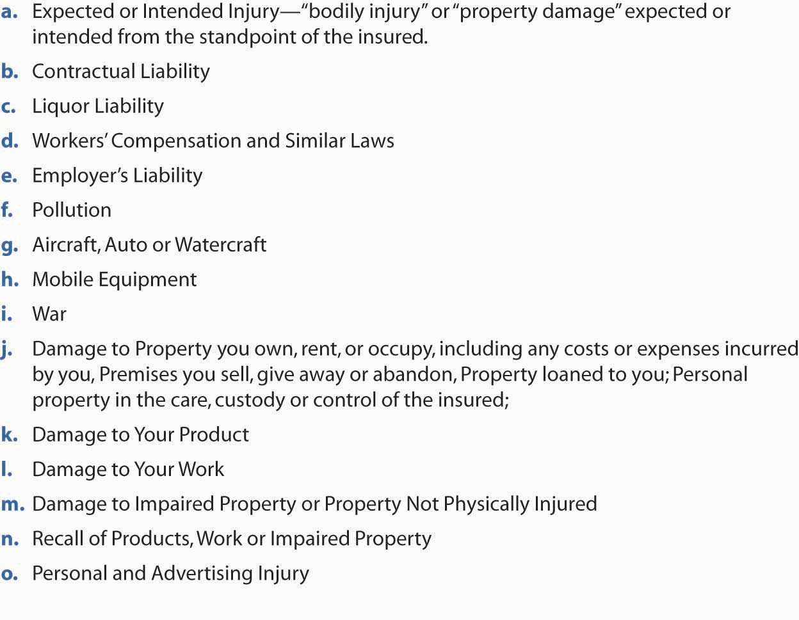
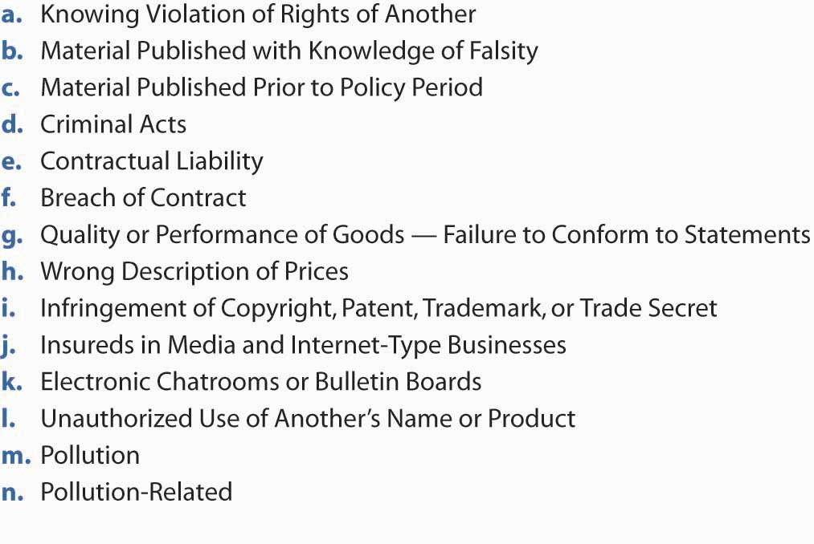
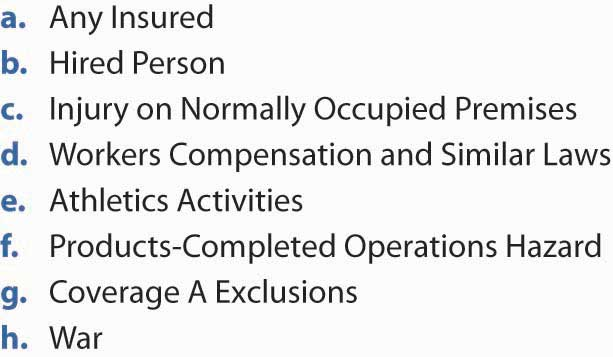
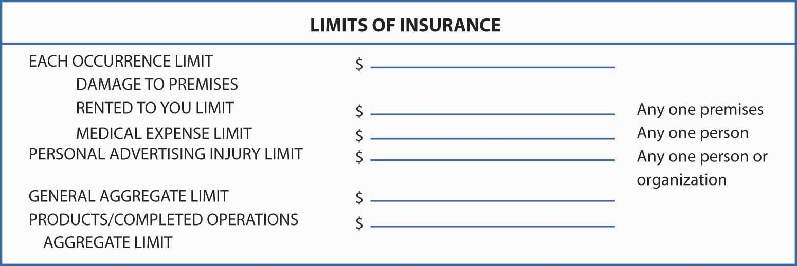

In this section we elaborate on commercial liability insurance solutions:
As discussed in Chapter 12 "The Liability Risk Management", businesses have a wide variety of liability exposures. Many of these are insurable through the CGL.
The format of the CGL is very similar to that of the BPP and BIC. The CGL contract includes the following:
The CGL itself is comprised of the following five sections:
Coverage is available either on an occurrence or on a claims-made basis. Claims-made basisA policy that limits the period in which the claims for injuries need to be made. is a policy that limits the period in which the claims for injuries need to be made. Under such a program, claims for injuries that occurred thirty years ago cannot be covered. The claim needs to be filed (made) during the coverage period for injuries that occur during the same period or the designated retroactive time. This limitation is the result of insurers having to pay for asbestos injuries that occurred years before knowledge of the exposure outcome was discovered. Insurers that provided coverage for those injuries thirty years ago were required to pay regardless of when the claims were made. Claims for past unforeseen injuries were not included in the loss development (discussed in Chapter 7 "Insurance Operations") and caused major unexpected losses to the insurance industry. If the claims-made option is chosen, a sixth section is incorporated into the policy, the extended reporting periods provision.
The CGL provides three types of coverage:
Each coverage involves its own insuring agreement and set of exclusions. Each also provides a distinct limit of insurance, although an aggregate limit may apply to the sum of all costs under each coverage for the policy period. Other aggregates also apply, as discussed in the policy limits section below.
The CGL provides open-perils coverage for the insured’s liabilities due to bodily injury or property damage experienced by others. The bodily injury or property damage must arise out of an occurrence, which is “an accident, including continuous or repeated exposure to substantially the same general harmful conditions.” If the commercial general liability policy is a claims-made policyA policy that limits the period in which the claims for injuries need to be made., the event causing liability must take place after a designated retroactive dateDate after which an event causing liability must take place in order to be covered., and a claim for damages must be made during the policy period. Under the claims-made policy, an insured’s liability is covered (assuming no other applicable exclusions) if the event causing liability occurs after some specified retroactive date and the claim for payment by the plaintiff is made within the policy period. This differs from an occurrence policyCovers liability for events that take place within the policy period, regardless of when the plaintiff makes a claim., which covers liability for events that take place within the policy period, regardless of when the plaintiff makes a claim. The claims-made policy may lessen the insurer’s uncertainty about likely future payments because the time lag between premium payments and loss payments generally is smaller with claims-made than with occurrence.
If the claims-made policy is purchased, a retroactive date must be defined. In addition, an extended reporting period must be included for the policy to be legal. The extended reporting periodProvides coverage for claims brought after the policy period has expired for events that occurred between the retroactive date and the end of the policy period. applies if a claims-made policy is canceled and provides coverage for claims brought after the policy period has expired for events that occurred between the retroactive date and the end of the policy period. An example is shown in Table 15.3 "Claims-Made Coverage Example". The standard extended reporting form is very limited, so insureds may purchase additional extensions.
Table 15.3 Claims-Made Coverage Example
|
Assume a policy purchased on January 1, 1990, that provides $1,000,000 per occurrence of claims-made coverage with a retroactive date of January 1, 1988, and a one-year policy period. Further assume that the policy was canceled on December 31, 1990, and that the insured purchased a one-year extended reporting period. The following losses occur: |
|||
| Amount | Date of Injury | Date of Claim | Insurer Responsibility |
| $100,000 | 3/15/88 | 3/15/89 | −0The claim precedes the coverage period. No coverage exists under this policy. |
| $100,000 | 3/15/88 | 3/15/90 | 100,000The event follows the retroactive date and the claim is brought during the policy period. |
| $100,000 | 3/15/90 | 3/15/91 | 100,000The event follows the retroactive date and the claim is brought in the extended reporting period. |
| $100,000 | 3/15/90 | 3/15/92 | −0The claim follows the end of the reporting period. |
| $100,000 | 3/15/91 | 3/15/91 | −0Even though the claim is brought within the extended reporting period, the event occurs. |
The claims-made policy was introduced (first in medical malpractice insurance, later in other policies) in response to increased uncertainty about future liabilities. As explained above, an occurrence policy could be sold today, and liability associated with it could be determined thirty years later or more. With changing legal and social norms, the inability of insurers to feel confident with their estimates of ultimate liabilities (for pricing purposes) led them to develop the claims-made coverage.
Bodily injury (BI)Bodily injury, sickness, or disease sustained by a person, including death resulting from any of these at any time. is defined as bodily injury, sickness, or disease sustained by a person, including death resulting from any of these at any time. Property damage (PD)Physical injury to tangible property, including all resulting loss of use of that property, or loss of use of tangible property that is not physically injured. is defined as (a) physical injury to tangible property, including all resulting loss of use of that property, or (b) loss of use of tangible property that is not physically injured.
In addition to covering an insured’s liability due to bodily injury or property damage, the insurer promises to defend against suits claiming such injuries. The cost of defense is provided in addition to the limits of insurance available for payment of settlements or judgments, as is payment of interest that accrues after entry of the judgment against the insured. The insurer, however, has the general right to settle any suit as it deems appropriate. Furthermore, the insurer’s obligation to defend against liability ends when it has paid out its limits for any of the coverages in settlements or judgments.
So far, this coverage sounds extremely broad, and it is. A long list of exclusions, however, defines the coverage more specifically. Figure 15.11 "Exclusions to Coverage A—Bodily Injury and Property Damage Liability in the ISO Commercial General Liability Policy" provides the list of exclusions.
Figure 15.11 Exclusions to Coverage A—Bodily Injury and Property Damage Liability in the ISO Commercial General Liability Policy
We can discuss the exclusions as they relate to the four general reasons for exclusions, as presented earlier. Several relate to situations that may be nonfortuitous. Exclusion (a), which denies coverage for intentionally caused harm, clearly limits nonfortuitous events. Exclusion (b), an exclusion of contractually assumed liability, also could be considered a nonfortuitous event because the insured chose to enter into the relevant contract. Pollution liability (exclusion f), likewise, may arise from activities that were known to be dangerous. Damage to the insured’s own products or work (exclusions k and l) indicates that the insurer is not willing to provide a product warranty to cover the insured’s poor workmanship, a controllable situation.
A number of exclusions are intended to standardize the risk and/or to limit duplicate coverage when other coverage does or should exist. Liquor liability (exclusion c), for instance, is not standard across insureds. Entities with a liquor exposure must purchase separate coverage to protect against it. Likewise, we know that workers’ compensation and employers’ liability (exclusions d and e) all are covered by specialized contracts. Separate policies also exist for autos, aircraft, watercraft, and mobile equipment (exclusions g and h) because these risks will not be standard for organizations with similar general liability exposures.
The category of property owned by or in the care, custody, and control of the insured is also excluded (exclusion m). These exposures are best handled in a property insurance policy, in part because the insured cannot be liable to itself for damage, and in part because the damage should be covered whether or not it is caused by the insured’s carelessness.
Some exclusions apply because of the catastrophic potential of certain situations. In addition to the possible nonfortuitous occurrence of pollution losses, the potential damages are catastrophic. Cost estimates to clean hazardous waste sites in the United States run into the hundreds of billions of dollars, as discussed in Chapter 12 "The Liability Risk Management". Similarly, war-related injuries (exclusion i) are likely to affect thousands, possibly hundreds of thousands of people simultaneously.
The war risk practically defines catastrophe because it affects so many people from a single situation, not too unlike a product recall (exclusion n). Most manufacturers produce tens of thousands of products in each batch. If a recall is necessary, the whole batch generally is affected. This situation also has some element of nonfortuity, in that the insured has some control over deciding upon a recall, although limited separate coverage is available for this exposure. A memorable example occurred when Johnson & Johnson recalled all of its Tylenol products following the lethal tampering of several boxes. Even though Johnson & Johnson undertook the recall to prevent future injury (and possible liability), its insurer denied coverage for the recall costs. Insureds can buy an endorsement for product recall.
Another exclusion is the fungi and bacteria exclusion. CGL has a mold exclusion that applies to bodily injury and property damage only. The endorsement states that payment for liability is excluded for the following:
Coverage A provides protection against physical injury or damage due to the insured’s activities. Despite the many exclusions, it provides broad coverage for premises, products, completed work, and other liabilities. It does not provide protection, however, against the liabilities arising out of nonphysical injuries. Coverage B does provide that protection. The policy states,
“We will pay those sums that the insured becomes legally obligated to pay as damages because of ‘personal and advertising injury’ to which this insurance applies. We will have the right and duty to defend the insured against any ‘suit’ seeking those damages. However, we will have no duty to defend the insured against any ‘suit’ seeking damages for ‘personal and advertising injury’ to which this insurance does not apply. We may, at our discretion, investigate any offense and settle any claim or ‘suit’ that may result.ISO Commercial General Liability Coverage Form CG 00 0110 01. Includes copyrighted material of Insurance Services Office, Inc., with its permission.”
The exclusions for Coverage B, Personal and Advertising Injury Liability, are listed in Figure 15.12 "Exclusions to Coverage B—Personal and Advertising Injury Liability in the ISO Commercial General Liability Policy".
The exclusions eliminate intentional acts (nonaccidental acts), acts that occurred before the coverage began, criminal acts, and contractual liability. False statements and failure to conform to statements and infringements of copyrights and trademarks are also excluded. As in other coverages, electronic chat rooms and Internet businesses are excluded (see Chapter 12 "The Liability Risk Management"). In this context, insureds in the Internet and media businesses are completely excluded from coverage B under the 2001 CGL policy. The particular exclusion of unauthorized use of another’s name and product was also noted in Chapter 12 "The Liability Risk Management". Because pollution and pollution related-risks are considered catastrophic, they are excluded as well.
Figure 15.12 Exclusions to Coverage B—Personal and Advertising Injury Liability in the ISO Commercial General Liability Policy
We have discussed medical payments coverage in both the homeowners and auto policies. The CGL medical payments coverage is similar to what is found in the homeowners policy. It provides payment for first aid; necessary medical and dental treatment; and ambulance, hospital, professional nursing, and funeral services to persons other than the insured. The intent is to pay these amounts to people injured on the insured’s premises or due to the insured’s operations, regardless of fault. That is, medical payments coverage is not a liability protection.
The medical payments coverage is not intended to provide health insurance to the insured nor to any employees of the insured (or anyone eligible for workers’ compensation). Nor will it duplicate coverage provided in other sections of the CGL or fill in where Coverage A excludes protection. War is also excluded. A list of exclusions to Coverage C is provided in Figure 15.13 "Exclusions to Coverage C—Medical Payment in the ISO Commercial General Liability Policy".
Figure 15.13 Exclusions to Coverage C—Medical Payment in the ISO Commercial General Liability Policy
Supplementary payments are for bodily injury, property damage, and personal injury coverage. The insurer pays for the claim or suit, the cost for bonds up to $250, all expenses for investigations it conducts, and “all reasonable expenses incurred by the insured.” As long as the list of conditions detailed in the policy is met, the insurer pays all attorneys’ fees that it incurs in the defense of the insured. The obligation to defend and to pay for attorneys’ fees and necessary litigation expenses as supplementary payments ends when the insurer has reached the applicable limit of insurance in the payment of judgments or settlements.
Section II of the CGL is very specific and detailed in defining whose liability is covered. The following are insureds:
The volunteer workers of the business are also insured. However, none of the employees or volunteer workers are insureds for bodily injury or personal and advertising injury to the insured or damage to property that is owned or occupied by the insured.
The limits of insurance, as you know by now, define the maximum responsibility of the insurer under specified situations. A portion of the declaration for CGL is shown in Figure 15.14 "Section of the ISO Commercial General Liability Declaration Page ((Sample))".
Figure 15.14 Section of the ISO Commercial General Liability Declaration Page ((Sample))
Source: ISO Commercial General Liability Coverage Form CG 00 0110 01. Includes copyrighted material of Insurance Services Office, Inc., with its permission.
The policy clarifies the limits of insurance shown in the declarations and the applicable rules. The general aggregate limit is the most that the insurer pays for the sum of
The limits are paid regardless of the number of insureds, claims made, or suits brought, or persons or organizations making claims or bringing suits. The limits apply separately to each consecutive annual period.
Like all other policies, the CGL includes an extensive conditions section, primarily outlining the duties of the insured and insurer. Subrogation, other insurance, proper action in the event of loss, and similar provisions are spelled out in the conditions section.
Words used in insurance policies might not have the same interpretation as when they are used in other documents or conversations. To specify its intent, insurers define significant terms (remember that insurance is a contract of adhesion, so ambiguities are read in the manner most favorable to the insured). Some defined terms in the CGL have already been discussed, including “bodily injury,” “property damage,” “personal injury,” “advertising injury,” and “occurrence.” In total, twenty-two terms are defined in the CGL. Like the rest of the policy, a full interpretation of coverage requires reading and analyzing these definitions. The problems that arise out of interpretation of the CGL policy wording is discussed in the box “Liability Limits: One Event or Two?”
Today, $1,000,000 of liability coverage, the standard limit for a CGL, is insufficient for many businesses. Furthermore, liabilities other than those covered by the CGL may be of significant importance to a business. To obtain additional amounts and a broader scope of coverage, a business can purchase a commercial umbrella liability policy.
The umbrella liability policyProvides excess coverage over underlying insurance. Except for excluded risks, it also provides excess over a specified amount, for which there is no underlying coverage. provides excess coverage over underlying insurance. Except for excluded risks, it also provides excess over a specified amount, such as $25,000, for which there is no underlying coverage. Typically, you are required to have specified amounts of underlying coverage, such as the CGL with a $1,000,000 limit and automobile insurance with the same limit. When a loss occurs, the basic contracts pay within their limits and then the umbrella policy pays until its limits are exhausted. If there is no underlying coverage for a loss covered by the umbrella, you pay the first $25,000 (or whatever is the specified retention), and the umbrella insurer pays the excess.
The umbrella policy covers bodily injury, property damage, personal injury, and advertising injury liability, similar to what is provided in the CGL. Medical expense coverage is not included. The limits of coverage, however, are intended to be quite high, and the exclusions are not as extensive as those found in the CGL. Most businesses find umbrella liability coverage an essential part of their risk management operations.
In this section you studied the commercial general liability component of the CPP and the umbrella liability option:
Five sections make up the CGL: coverages, who is an insured, limits of insurance, conditions, and definitions.
Assume that the Baker-Leetch Pet Store has a CGL with a $1,000,000 aggregate limit. The policy commences July 1, 2008, and ends June 30, 2009.